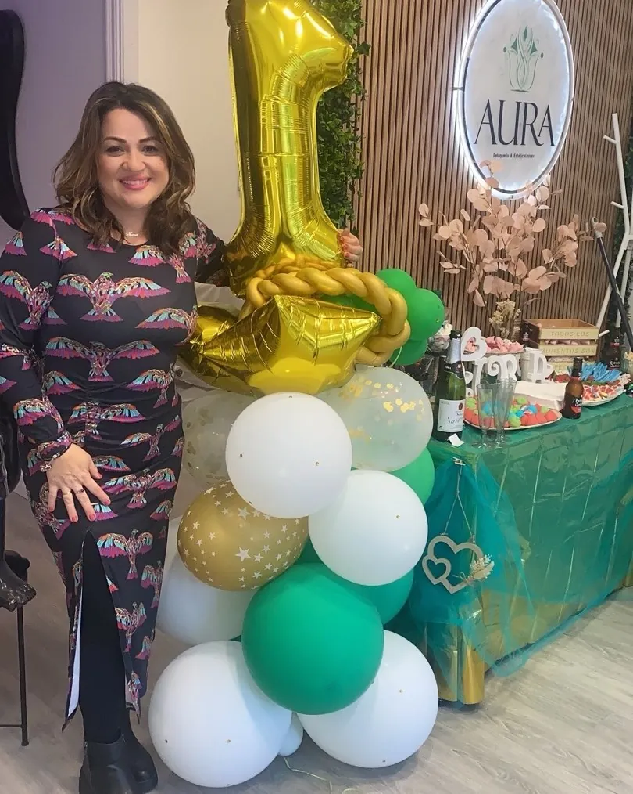
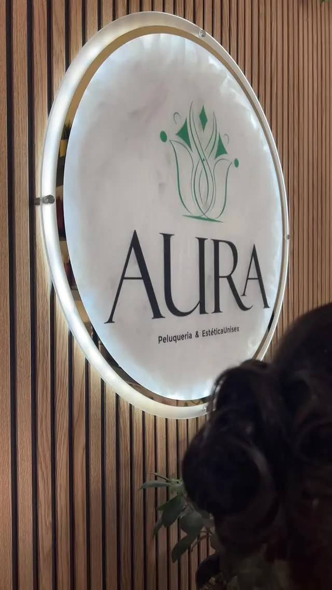
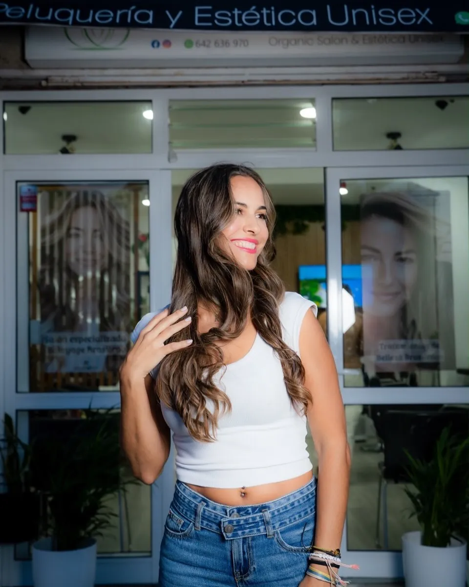

Escuchar de verdad
Tu rutina, tus gustos y tus dudas tienen sitio. Empezamos por entender qué quieres cambiar y qué quieres conservar.

Bienvenida a nuestro espacio
Tres profesionales, más de veinte años de experiencia y una forma de entender la belleza que empieza por escucharte. Esto es AURA.


Lo que nos une
Detrás de AURA hay un equipo de tres mujeres apasionadas por la peluquería y el cuidado del cabello. Anabel y sus compañeras comparten un compromiso: que cada persona se sienta acompañada desde la primera conversación.
La experiencia nos ayuda a mirar con criterio; la cercanía, a entender lo que necesitas. No queremos que elijas un servicio por inercia, sino que comprendas la propuesta y te sientas a gusto con ella.
Nos encontrarás en El Sauzal, en el norte de Tenerife. Un salón unisex donde puedes venir con una idea muy clara o con ganas de descubrir algo nuevo.

Las tres de AURA
Escuchar, asesorar y atender de forma personal: esa es nuestra forma de trabajar. El equipo sigue formándose y participa en eventos de marcas profesionales, como el Experience Day de Arkhē Cosmetics que acogimos en el salón.
Cuando celebramos los dos años del salón lo hicimos como más nos gusta: con quienes nos acompañan.
Un espacio con raíces
Los listones de nogal, las plantas y los detalles de AURA acompañan cada visita.





Nuestros imprescindibles
Lo que se siente, se cuenta
Una tarde espectacular en Aura. Desde que llegué, el ambiente, el buen rollo y la atención hicieron que me sintiera súper cómoda y disfrutara muchísimo de la experiencia.
Estoy encantada con el tratamiento de keratina que me he hecho en Aura, el resultado es increíble, además de que me trataron como a una reina. Anabel y su equipo son unas grandes profesionales, lo recomiendo muchísimo.
Servicio impecable. Me entendió a la perfección a la hora de hacerme el corte y me quedó ideal, además usa unos productos espectaculares. Ella es un encanto y una gran profesional.
La mejor peluquería de Tenerife. Productos de calidad y una atención y servicio 5 estrellas. La dueña, Anabel, es un encanto y ofrece siempre a sus clientes un trato inmejorable.
De las mejores peluquerías, trato cercano, profesionalidad y de 10 el resultado. Me llevé una mascarilla y noto el brillo que deja en el pelo con cada lavado.
Llevé a mi hija a cortarse el pelo y el resultado fue increíble, nadie le había dejado el pelo tan bien. La recomendaré a todo el mundo sin dudarlo.
Me hice la pedicura y manicura permanente para una boda y semanas después todavía estaban perfectas. Es una gran profesional y una persona encantadora.
Profesionalidad, cercanía y mucho mimo en cada detalle.
Muy profesionales. Puntualidad, buen trato, te aconsejan y te dejan exactamente lo que tú quieres. Sin lugar a dudas, vuelvo en breve.
Me encanta el trato y los productos orgánicos. Y no tardan en darte cita.
Diez extractos de las 32 reseñas visibles en Google el 20 de noviembre de 2026. La valoración puede cambiar.
Una buena recomendación también puede simplificar tus mañanas. Te orientamos sobre el lavado, el acabado y los productos profesionales adecuados a tu cabello.
Hay un momento que es solo tuyo
Cuéntanos qué necesitas. Nosotras ponemos el tiempo, las manos y el cuidado.